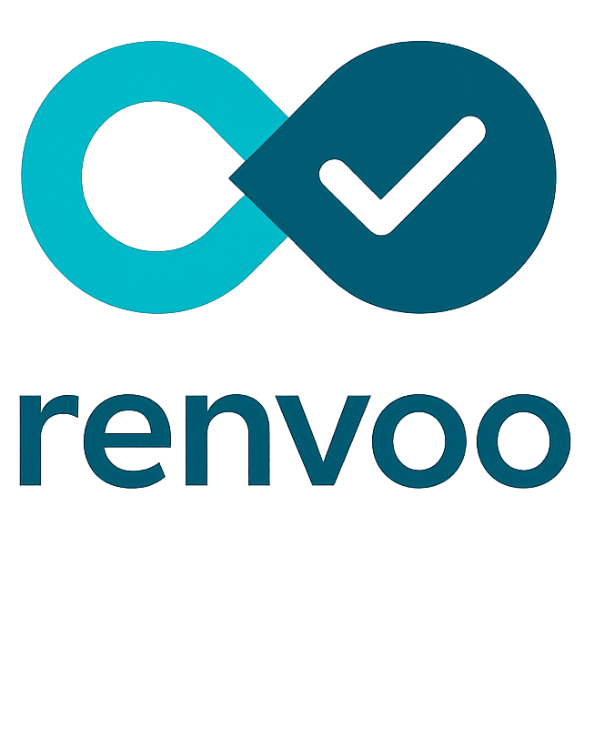
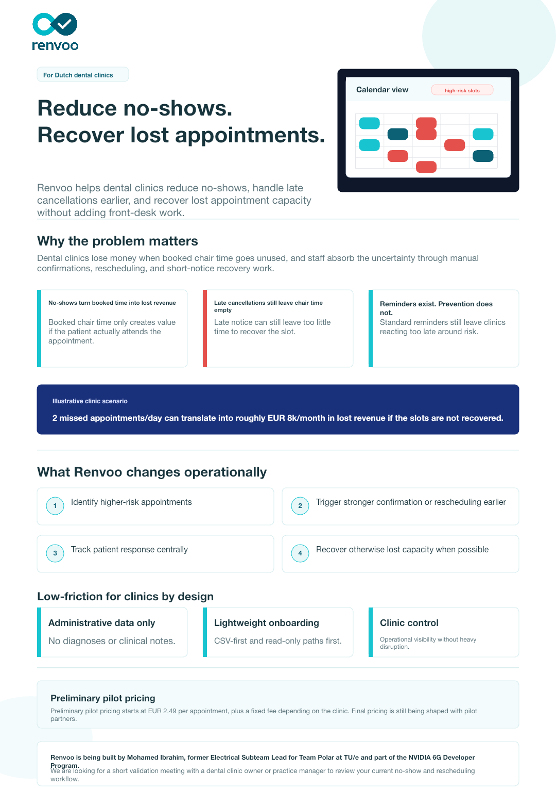
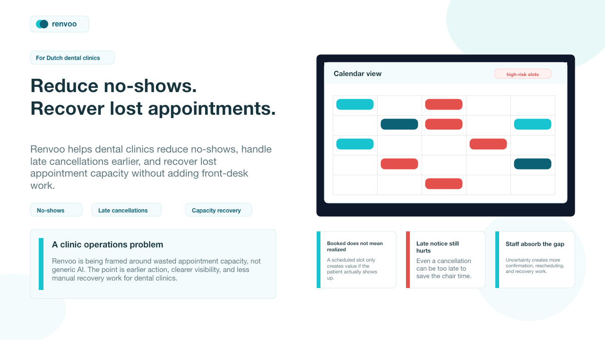
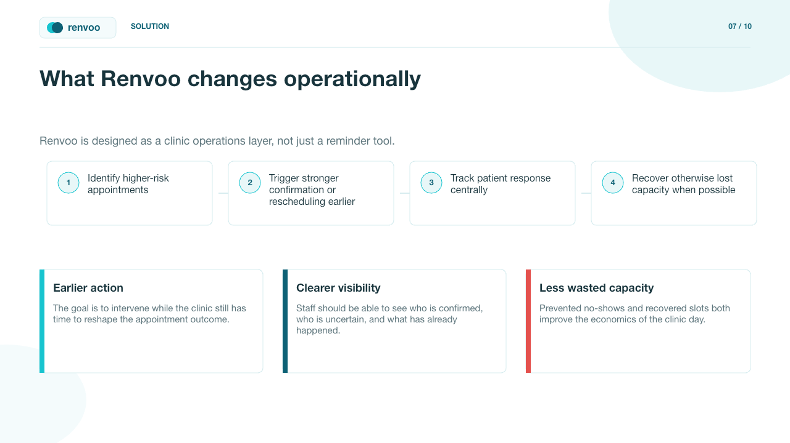

Chair time at risk
High-risk appointments surface before the slot is lost.
- Tuesday 14:00 implant consult
- Thursday 09:30 hygiene block
- Friday 16:15 follow-up visit
For Dutch dental clinics
Renvoo helps dental clinics reduce no-shows, handle late cancellations earlier, and recover lost appointment capacity without adding front-desk work.
High-risk appointments surface before the slot is lost.
Escalate confirmation and rescheduling before uncertainty becomes waste.
Use waitlists and earlier-slot offers to backfill otherwise empty time.
The problem
Sending the same reminder to everyone still leaves clinics reacting too late.
A booked slot only creates value if the patient actually shows up. Empty chair time is immediate lost capacity.
Even when patients tell you, late notice often arrives too late to save the slot.
Confirmations, rescheduling, and recovery work all increase when attendance is unclear.
The workflow
Renvoo is designed as a clinic operations layer, not just a reminder tool.
Start with lightweight exports, read-only inputs, or local connector flows instead of heavy enterprise integration.
Highlight higher-risk appointments using operational scheduling and communication signals.
Support earlier outreach, clearer status tracking, and lower uncertainty before the slot is lost.
Help clinics recover otherwise empty time through waitlists or earlier-slot movement while keeping operational control with staff.
How a pilot starts
The point of the first conversation is to understand where uncertainty creates empty chair time and whether a lightweight pilot is justified.
Review current no-show, late-cancellation, confirmation, and rescheduling workflow with the clinic owner or practice manager.
Start with operational scheduling and communication data through CSV-first or read-only inputs instead of pushing for deep integration on day one.
Use the pilot to learn whether no-show reduction, recovered revenue, and lower front-desk load show up clearly enough to earn a broader rollout.
Proof posture
The case today is based on operating logic and scenario math. The point of a pilot is to prove the outcome on real clinic workflows without overreaching into clinical data.
Data boundary
Preliminary pilot
Enough to frame budget fit now, while keeping the commercial commitment honest.
Founder-led onboarding, lightweight data intake, and a workflow focused on confirmation, rescheduling, and capacity recovery.
Preliminary pilot pricing starts at EUR 2.49 per appointment, plus a fixed fee depending on the clinic. Final pricing is still being shaped with pilot partners.
Pricing is intentionally presented as preliminary because it still needs shaping with real pilot partners.Founder credibility
Renvoo is being built by Mohamed Ibrahim, former Electrical Subteam Lead for Team Polar at TU/e and part of the NVIDIA 6G Developer Program.

Clinic materials
The current website pass ships with the same clinic-facing materials already used in founder-led outreach.



Questions clinics ask first
The first conversations are usually practical: workflow disruption, data boundaries, and whether the outcome is worth changing anything at all.
That makes sense. The gap Renvoo focuses on is what happens when reminders are not enough: no response, late notice, and the manual work needed to recover capacity before the chair time is lost.
That is exactly why the current direction is low-friction. The goal is not to force a heavy system change, but to fit around current scheduling operations with lightweight onboarding and operational visibility.
That caution is right. Renvoo is designed around non-clinical administrative scheduling and communication data, not diagnoses, clinical notes, or treatment decisions.
The point of a short validation meeting is not to introduce a full rollout. It is to understand the current workflow and see whether there is enough operational pain to justify a lightweight pilot.
That is the key question. The current case is based on clear operational logic and scenario math, and the pilot stage exists to validate real no-show reduction, recovered revenue, and reduced admin burden with actual clinic workflows.
Current ask
We are looking for a short validation meeting with a dental clinic owner or practice manager to review your current no-show and rescheduling workflow.